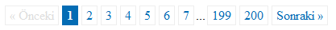
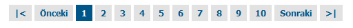
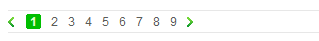

![sayfalama_][]Web sitelerin kodlarken genelde hafızamdaki hazır metotları kullanıyorum. Ancak sonra farklı bir yöntem görünce aklıma "acaba bu daha mı iyi" sorusu geliyor ve araştırma yapmaya başlıyorum. Sayfalamada da aynı durum söz konusu benim için. Burada yaptığım araştırmayı sizlerle paylaşmayı düşünüyorum. Genel olarak sayfalama hakkında bir giriş yapalım sonra kodlamaya geçeriz.
Sayfalama
Web sitelerinde sayfalama genel olarak içeriğin uzun olduğu durumlarda kullanıcıya daha kullanabilir sayfalar üretmek için içeriğin belli mantıksal kısımlara ayrılmasıdır. Genelde arama sonuç sayfalarında, günlük(blog) sitelerinde, uzun içeriğe sahip makalelerde uygulamalarına rastlarız.
Sayfalama alanları genel olarak sitede gezinme alanlarının(navigation) bir parçasıdır. Sitedeki kullanılabilirliği ve düzeni sağlayan normal menü yapılarının dışındaki yapılardır. Aslında bir bakıma gezinme elemanı sınıfına da sokabiliriz. Sayfalama yaparken aşırıya kaçıp görünüşü çok hoş olsun diye kullanıcıyı zora sokan tasarımlardan kaçınmak gerekir. Sayfalamada önemli olan kullanıcı dostu ve işlevsel bir yapı oluşturmaktır, ondan sonra görsellik gelir. İşlevselliği kaybetmeden görsellikde geliştirilebilir.
Sayfalamada dikkat edilecek hususları Faruk Ateş'in makalesinde çok güzel bir liste şeklinde görüyoruz. Biz buraya başlıklarını alalım.
- Geniş tıklanabilir alanlar olsun. Kullanıcının tıklamasını kolaylaştırmak için.
- Altı çizili kullanmayın. Zaten tıklanacak alanlar olduğu belli.
- Mevcut sayfada olduğumuz belli olsun. Önemli bir ayrıntı.
- Linkler arasına mesafeler bırakın. Kullanıcının kolay tıklaması için önemli.
- "Önceki" ve "Sonraki" bağlantılarını verin.
- Duruma göre "İlk" ve "Son" bağlantıları koyun.
- İlk ve Son bağlantılarını sayfalama alanın en dışında olmasına dikkat edin.
- Sayfa bilgisi kısmını ekleyin. Örn: (Sayfa 80 / 3). Listeye bunu ben ekledim :D
Sayfalama için genelde listeme elemanı(ul) kullanıyorum. Listeleme olmadanda kullanılabilir benim sitemde olduğu gibi. Ama benim tercihim liste elemanı ile oluşturmaktan yana çünkü tüm tasarımsal ihtiyaçları karşılayacak bir yapı bütünlüğü sağlıyor bize listeleme.
CSS ile Sayfalama
Sayfalama Örnek 1:
Basit yapılı sayfalamalarda, daha doğrusu resim, ovallik içermeyen sayfalamalarda;
XHTML Kodu:
[sourcecode language="html"] \<div class="sayfalama">\<span class="pasif">« Önceki\</span>\<span class="secili">1\</span>\<a href="/page/2/">2\</a>\<a href="/page/3/">3\</a>\<a href="/page/4/">4\</a>\<a href="/page/5/">5\</a>\<a href="/page/6/">6\</a>\<a href="/page/7/">7\</a>...\<a href="/page/199/">199\</a>\<a href="/page/200/">200\</a>\<a href="/page/2/" class="next">Sonraki »\</a>\</div> [/sourcecode]
CSS Kodumuz:
[sourcecode language="css"] .sayfalama { padding: 3px; margin: 3px; text-align:center; } .sayfalama a { padding: 2px 5px 2px 5px; margin: 2px; border: 1px solid #EEE; text-decoration: none; color: #036CB4; } .sayfalama a:hover, .sayfalama a:active { border: 1px solid #999; color: #666; } .sayfalama .secili { padding: 2px 5px 2px 5px; margin: 2px; border: 1px solid #036CB4; font-weight: bold; background-color: #036CB4; color: #FFF; } .sayfalama .pasif { padding: 2px 5px 2px 5px; margin: 2px; border: 1px solid #EEE; color: #DDD; } [/sourcecode]

Örneği görmek için tıklayınız.
Basit kodlama tekniğinde linkler ve span kullanarak sayfalarımızı oluşturuyoruz. Sayfa şeklini belirlemek için kenar için boşluk(padding), kenar dışı boşluk(margin), kenar dışı çizgisi tanımlarını yapıyoruz.
Sayfalamada fare üzerine geldiğinde ve aktif haller için genelde farklı renk tanımları yapılarak fark belirtilir.
Mevcut sayfa için ayrı bir sınıf tanımı(örn: secili) yaparak ona göre bir tanım yaparız.
Ayrıca pasif alanlar için bir tanım yapıyoruz. Daha silik bir renk ile.
Sayfalama Örnek 2:
Yahoyt'da yaptığım örnek sayfalama. Genelde kullanılan sayfalamaya bir örnek olacak nitelikte. İkinci yöntem benim daha çok tercih ettiğim yöntem listeler ile sayfalama;
XHTML
[sourcecode language="html"] \<ul class="sayfalama"> \<li>\<a href="">|\<\</a>\</li> \<li>\<a href="">Önceki\</a>\</li> \<li>\<span>1\</span>\</li> \<li>\<a href="" title="Sayfa 2">2\</a>\</li> \<li>\<a href="" title="Sayfa 3">3\</a>\</li> \<li>\<a href="" title="Sayfa 4">4\</a>\</li> \<li>\<a href="" title="Sayfa 5">5\</a>\</li> \<li>\<a href="" title="Sayfa 6">6\</a>\</li> \<li>\<a href="" title="Sayfa 7">7\</a>\</li> \<li>\<a href="" title="Sayfa 8">8\</a>\</li> \<li>\<a href="" title="Sayfa 9">9\</a>\</li> \<li>\<a href="" title="Sayfa 10">10\</a>\</li> \<li>\<a href="" title="Sonraki">Sonraki\</a>\</li> \<li>\<a href="" title="İlk Sayfa">>|\</a>\</li> \</ul> [/sourcecode]
CSS kodu
[sourcecode language="css"] ul.sayfalama { margin:0 auto; width:530px; padding:10px 0 0 0; clear:left } ul.sayfalama li { font:bold 12px Tahoma, Geneva, sans-serif; color:#fff; float:left; list-style:none; margin:0 2px; background:#005689; } ul.sayfalama li span { padding:5px 8px; display:block } ul.sayfalama li a { font:bold 12px Tahoma, Geneva, sans-serif; color:#005689; text-decoration:none; background-color:#e2e2e2; padding:5px 8px; display:block } ul.sayfalama li a:hover { background-color:#005689; color:#e2e2e2; } [/sourcecode]
Örneği görmek için tıklayınız.
Sayfalama Örnek 3:
Son olarakda bonus.com.tr kampanyalarda yaptığım sayfalama.
XHTML kodu
[sourcecode language="html"] \<ul class="sayfalama kapsayamamaSorunu"> \<li class="oncekiSayfa">\<a href="javascript:;">önceki\</a>\</li> \<li class="seciliSayfaNo">\<a href="/page/1/">1\</a>\</li> \<li>\<a href="/page/2/">2\</a>\</li> \<li>\<a href="/page/3/">3\</a>\</li> \<li>\<a href="/page/4/">4\</a>\</li> \<li>\<a href="/page/5/">5\</a>\</li> \<li>\<a href="/page/6/">6\</a>\</li> \<li>\<a href="/page/7/">7\</a>\</li> \<li>\<a href="/page/8/">8\</a>\</li> \<li>\<a href="/page/9/">9\</a>\</li> \<li class="sonrakiSayfa">\<a href="/page/2/">sonraki\</a>\</li> \</ul> [/sourcecode]
CSS kodu:
[sourcecode language="css"] ul.sayfalama{ padding: 3px; border-bottom:1px solid #e7e7e7; border-top:1px solid #e7e7e7; } ul.sayfalama li{ list-style:none; float:left; margin-right:10px; line-height:15px; } ul.sayfalama li.seciliSayfaNo{ background: url(images/sayfalama_ard.gif) right top no-repeat; } ul.sayfalama li.seciliSayfaNo a{ color:#e2ffcc; text-decoration:none; padding:0 4px; background: url(images/sayfalama_ard.gif) 0 -15px no-repeat; font-weight:bold; } ul.sayfalama li a{ color:#5b5d5a; text-decoration:none; font-size:12px; } ul.sayfalama li.oncekiSayfa a{ display: block; width: 6px; height: 10px; margin:3px 2px 0 0; background: url(images/sayfalama_ard.gif) 0 -36px no-repeat; text-decoration: none; text-indent:-9999px; } ul.sayfalama li.sonrakiSayfa a{ display: block; width: 6px; height: 10px; margin:3px 0 0 0; background: url(images/sayfalama_ard.gif) 0 -52px no-repeat; text-decoration: none; text-indent:-9999px; } [/sourcecode]
Listeleri yanyana koyup, seçili olan ardalanına yuvarlak kenarlı olması için li'ye ardalanın sag kısmını li içindeki bağlantıyada sol kısmını koyuyoruz.
Ayrıca ileri ve geri ikonlarını yine ardalan kaydırma tekniği ile aynı resimden yaralanarak ekliyoruz. Bu teknik şimdilerde sprite tekniği olarak adlandırılıyor. İşin mantığı birden fazla resmi ekleyip http isteklerin sayısı azaltarak sayfa yüklenme hızı arttırıyoruz.

Örneği görmek için tıklayınız.
Bu örnek bazı kısımlar yazının ilk kısmında anlattıklarınıza uymuyor diyebilirsiniz. Ama tasarımcının tercihleri böyle ve bu yazıyı daha yazmamıştım. Her yazıda bende bir şeyler öğreniyorum.
Bu sayfalamalar dışında bir çok örneği bulabileceğiniz. http://mis-algoritmos.com/2007/03/16/some-styles-for-your-pagination/ sitesini ziyaret etmenizi öneririm.
Kaynaklar
- http://kurafire.net/log/archive/2007/06/22/pagination-101
- http://mis-algoritmos.com/2007/03/16/some-styles-for-your-pagination/
- http://woork.blogspot.com/2008/03/perfect-pagination-style-using-css.html
- http://arjaneising.nl/html/tips-for-better-pagination
- [http://www.dynamicdrive.com/style/csslibrary/item/css_pagination_links/][]
- [http://www.thewebhelp.com/css/pagination_style_template/][]
- http://css.dzone.com/news/a-digg-flickr-pagination-style
- http://www.smashingmagazine.com/2007/11/16/pagination-gallery-examples-and-good-practices/
- http://komunitasweb.com/2009/03/42-pagination-design-inspiration/
http://mis-algoritmos.com/2007/03/16/some-styles-for-your-pagination/ "http://mis-algoritmos.com/2007/03/16/some-styles-for-your-pagination/" http://woork.blogspot.com/2008/03/perfect-pagination-style-using-css.html "http://woork.blogspot.com/2008/03/perfect-pagination-style-using-css.html" http://www.dynamicdrive.com/style/csslibrary/item/css_pagination_links/ "http://www.dynamicdrive.com/style/csslibrary/item/css_pagination_links/" http://www.smashingmagazine.com/2007/11/16/pagination-gallery-examples-and-good-practices/ "http://www.smashingmagazine.com/2007/11/16/pagination-gallery-examples-and-good-practices/"
Comments !